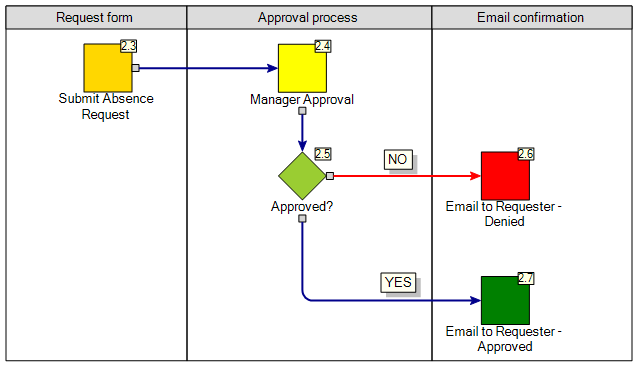
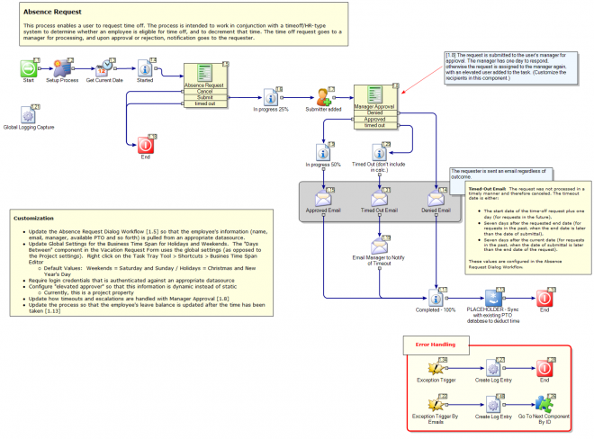

Vacation Request

[Install Drive]:\Program Files\Symantec\Workflow\Designer\Examples\
Description:
This process enables a user to request time off. The process is intended to work in conjunction with a timeoff/HR-type system to determine whether an employee is eligible for time off, and to decrement that time. The time off request goes to a manager for processing, and upon approval or rejection, notification goes to the requester.
Author mail:
nancy_mitchelmore@symantec.com
Process Prefix: "ITSR-"
Documentation
| N/A |
|---|
Business Model

Primary

Dialog Workflow(s)
- Absence Request
- Manager Approval
| Absence Request
This process enables a user to request time off. The process is intended to work in conjunction with a timeoff/HR-type system to determine whether an employee is eligible for time off, and to decrement that time. The time off request goes to a manager for processing, and upon approval or rejection, notification goes to the requester.
---
Customization
- Update the Absence Request Dialog Workflow [1.5] so that the employee's information (name, email, manager, available PTO and so forth) is pulled from an appropriate datasource.
- Update Global Settings for the Business Time Span for Holidays and Weekends. The "Days Between" component in the Vacation Request Form uses the global settings (as opposed to the Project settings). Right click on the Task Tray Tool > Shortcuts > Busines Time Span Editor
- Default Values: Weekends = Saturday and Sunday / Holidays = Christmas and New Year's Day
- Require login credentials that is authenticated against an appropriate datasource
- Configure "elevated approver" so that this information is dynamic instead of static
- Currently, this is a project property
- Update how timeouts and escalations are handled with Manager Approval [1.8]
- Update the process so that the employee's leave balance is updated after the time has been taken [1.13]
---
Timed-Out Email: The request was not processed in a timely manner and therefore canceled. The timeout date is either:
- The start date of the time-off request plus one day (for requests in the future),
- Seven days after the requested end date (for requests in the past, when the end date is later than the date of submittal),
- Seven days after the current date (for requests in the past, when the date of submittal is later than the end date of the request).
These values are configured in the Absence Request Dialog Workflow. | | --- |
Properties
| Name | Value |
|---|---|
| MailFromAddress | no-reply@symantec.com |
| ElevatedApproverName | HR Approver |
| ElevatedApproverEmail | HRApprover@symantec.com |
| SMTPServer | localhost |
| CriticalErrorContactName | Process Admin |
| CriticalErrorContactInfo | processadmin@symantec.com |
Global Data
| Name | Value |
|---|---|
| DocumentCategoryID | 1 |
Documented on Connect by: